Live streaming has always been one of the more preferred forms of content for a long time. Streams are used by many personalities, including celebrities, athletes, gamers, comedians, etc. Livestream and New York Magazine conducted a study by surveying 1,000 adults. The data revealed that 81% would prefer watching a live video rather than read a blog.
With the advent of the pandemic, a feature primarily for entertainment emerged as a necessary medium for connecting with people in real-time. For a business, connecting with its employees, clients, and stakeholder is very crucial.
As a YouTuber, a Live stream is important to engage with your audience. Livestream and New York magazine study also found that 82% prefer live video to social media posts, and 70% said that YouTube is their preferred live stream platform.
If you have questions about how to live stream on YouTube, then you have arrived at the right place. Let’s dive deeper into the topic and look at the benefits of live streaming.
Contents
- 1. What is YouTube live streaming?
- 2. How to enable live streaming on YouTube
- 3. Four ways for YouTube livestreaming
- 4. How to live stream on YouTube from PC
- 5. How to live stream on YouTube from a phone
- 6. How to live stream on YouTube via software encoder
- 7. How to live stream on YouTube via hardware encoder
- 8. Have a Goal
- 9. Select the right time
- 10. Create a proper setup
- 11. Engage with your audience
- 12. Promote your YouTube Live stream event
What is YouTube live streaming?
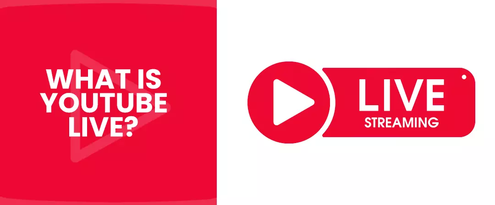
YouTube live streaming, more commonly known as YouTube live – is a feature used to interact with your audience in real-time. The user on this platform can find live streams on the left-hand side of the homepage under the live section.
YT suggestion algorithm will recommend your live streams to viewers that watch similar content or have already subscribed to your channel; hence you don’t have to depend on people to come and find your content.
YouTubers also buy legit YouTube subscribers when they want more audience for their live streams. Subscribers receive notifications before the creator goes live.
How to enable live streaming on YouTube
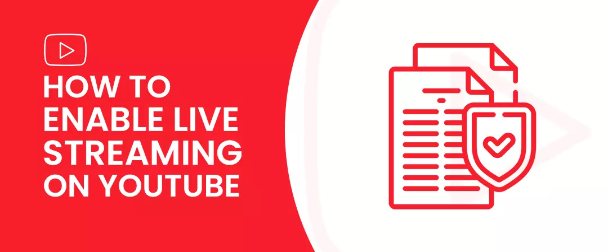
You may be eager to get your live stream game underway, but you need to verify your YTaccount before streaming.
-
Go to youtube.com/verify and add your phone number, country, and verification code delivery method.
-
You will receive a verification code, which you can use for account verification.
-
If you plan to live stream on a desktop, you will have to wait 24 hoursbefore you can start streaming.
-
You must have at least 1000 subscribersif you want to do the same on mobile – this restriction is limit to phones.
You have to take extra care to ensure that your live stream content does not violate community guidelines.
You might be interested in reading: How to grow your YouTube channel to reach 1000 subscribers.
Four ways for YouTube livestreaming
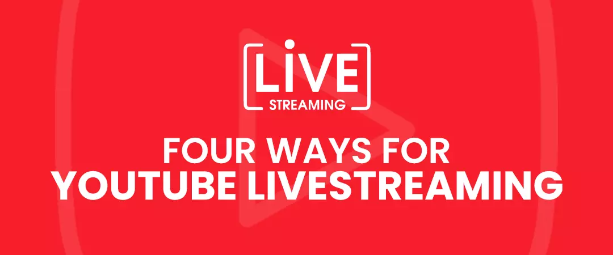
The platform provides its creators with four different ways to live stream on YT. But the method you choose to go with will depend on your end goal. If you are an average streamer, then Web or mobile would suffice your needs. The gamers usually select streaming software.
If you are a business and you stream for your business or if you want to make a living off of live streaming, then you might consider investing in a hardware encoder.
There is also an option to go for a subscription-based live streaming platform – you can get your hands on enhanced features for analytics, lead generation, and monetization.
You might be interested in reading: YouTube Analytics: How to Track the Right Metrics
How to live stream on YouTube from PC
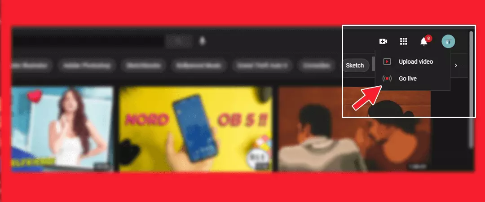
Streaming from your Web browser is the easiest option available for live streaming. – Especially when you do the majority of your live streaming from a single location. A webcam is an ideal option if your video plans involve engaging with your audience in real-time to share your thoughts. You can use an in-built or external Webcam. You can also use a high-quality camera like the DSLR or a digital camcorder – although you will require a USB capture card so that you can direct video signals to your computer. YT will recognize your camera as a typical webcam.
-
Go to youtube.com and log into your account,
-
Press the camcorder icon on the top-right screen corner.
-
From the drop-down menu, select “Go live,” then choose the Webcam.
-
Set your live stream title, select the privacy setting. You can live stream now or schedule YT live for some time in the future.
-
Select “More options” to set a description, toggle live chat, reveal promotions, monetization, and more.
-
By clicking on “Next,”YT will set a webcam thumbnail picture automatically. You can also upload a photo from your device storage.
-
Hit on “Go Live”.
-
Press “End Stream” when you are done.
YT uploads your live stream video to your channel so that viewers who missed the stream can have easy access.
You might be interested in reading: How to create a YouTube thumbnail that viewers love
How to live stream on YouTube from a phone
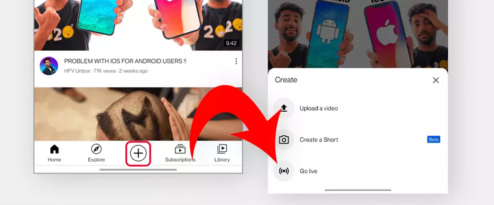
Before you consider live streaming on your phone, you have to know that channels are required to have a minimum of 1000 subscribers for mobile live streaming eligibility. The restrictions could be troublesome if a major part of your video plans revolved around mobile live streaming. YouTubers consider this option if they want to engage with their audience when on the move.
As soon as you hit your 1000 subscriber target, live streaming from your phone is a breeze.
-
You have to first download the “YouTube App” from the Google Play Store (Android) and App Store (iOS).
-
Tap on the + (create) icon in the bottom.
-
Select Go Live.
-
Set your Title and add privacy settings.
-
Add description by selecting “More options.” Press “Show more” to toggle live chat, monetization, set age restrictions, make available promotions, schedule time for live stream, and more.
-
Tap on Show Lessto exit. Press Next, YT automatically takes a webcam thumbnail photo. You can also upload a photo from your device storage.
-
Click “Go live.”
-
Once done, tap on “Finish” and “OK” to End stream.
You can find your recordings on the “My Videos” section inside the “Library” tab. VOD versions of live streams will reflect on the channel.
How to live stream on YouTube via software encoder
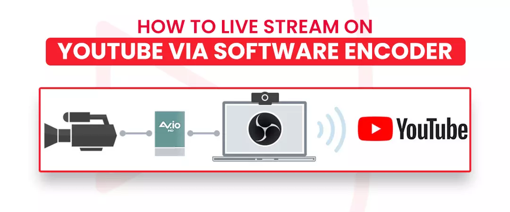
The live streaming software is usually used when a YouTuber has to share the screen or use multiple cameras. Xsplit and Wirecast are some of the software examples. A streaming software automatically detects any USB recording device attached to your PC. You can also utilize the USB capture card to direct non-USB video signals to your computer. The streaming software identifies the camera as a UVC (USB video class) device when you connect the capture card to your PC and attach the camera to the capture card.
-
First, you have to download and installstreaming software.
-
Go to YT and select the “Create or post” button on the top-right corner.
-
Click “Go Live.”
-
Navigate to YouTube Live Control Room, select “Stream” in the above navigation bar.
-
Select a title for your stream, add a description, select a category, choose privacy setting and upload a thumbnail.
-
You can stream now or schedule it for a later date.
-
Press “Create stream.”
-
Copy the “Stream key” that pops up; if you accidentally closed it, look at the bottom left corner of the Live Control Room.
-
Open the streaming software and paste the “Stream Key.” If you need the “Stream URL,” you can find it in the preference menu or settings.
-
Start the stream from your streaming software if you are immediately going live; if you have scheduled your stream, open the streaming software at the appropriate time and start the stream.
-
Back in YT Live Control Room, you can see the preview window. Click “Go Live” on the top right corner to begin streaming.
-
End streamvia your streaming software once you are done.
A copy of your live recording will be uploaded to your channel for viewers to watch. You can manage your streams from the “Manage” tab above the YT Live Control Room.
How to live stream on YouTube via hardware encoder
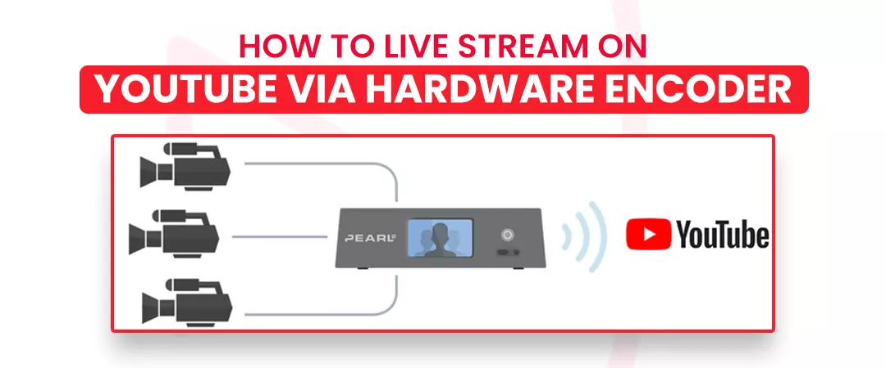
A hardware encoder is an external device used for video streaming, recording, etc. Compared to the web, software, and mobile, there are certain benefits when you stream via a hardware encoder. Software encoders burn through your system resources, whereas hardware encoders offer many inputs, enabling you to connect and stream HDMI/SDI cameras, laptops, tablets, XLR microphones, etc. Each one is a dedicated device.
Hardware encoders are preferred for high-end events, business shooting, concerts, sports, etc. But YouTuber who wants to provide an aesthetic upgrade to their stream can also avail the device. Using a hardware encoder can be a bit complex for new users, but the benefits from using one can far outweigh the time invested in learning how to use it.
Let’s use the example of the Pearl-2 hardware encoder:
-
Go to YT and select the “Create a video or post” button present on the top-right screen corner.
-
Click “Go Live.”
-
From the YouTube Live Control Room, select “Stream” from the top bar.
-
Add a Title, description for your stream, select privacy setting, choose a category and upload a thumbnail.
-
You can schedule your stream for a later date or go live immediately.
-
Press “Create Stream.” A window will appear with your “Stream key” along with “Stream URL,” you can also find this information in the bottom left corner of the Live Control Room.
-
Access Pearl web UI, click “Streaming” below the channel for live stream.
-
Paste your “Stream URL and Stream key” into the “URL” and “Stream name” sections.
-
Tap on “Apply.”
-
Press “Start” on the top-right corner if you want to broadcast now.
-
If you scheduled your YouTube live stream for some other time, select “Start” on the Pearl UI to set time. Go back to the YouTube Live Control Room, where you will see a preview window.
-
Select “Go Live” on the top-right corner to begin your stream.
Once you’re done with your broadcast, select “Stop” on the Pearl UI if your stream is unscheduled. As for the scheduled stream, end your broadcast via YT.
Tips on how to livestream on YouTube
Go through the following points before you start streaming.
Have a Goal.
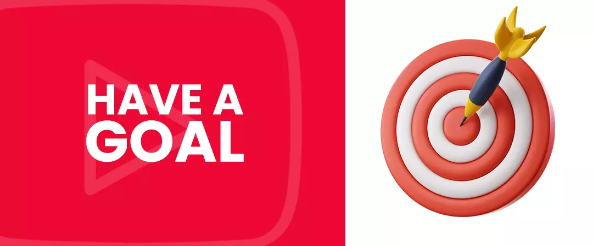
Create a plan by determining what you want you to want to achieve after going live. If you work in a team, assign each team member their specific roles. Be aware of the reason that made you do a live stream instead of a normal video. By considering these points, you can make the most effective broadcast.
The following needs to be prepared before you go live:
-
A “Title,”that is descriptive and specific and consists of a targeted keyword.
-
“Description”contains targeted and related keywords, with relevant social and web links and up to 15 hashtags.
-
A “Thumbnail image”should have a resolution of 1280 X 720 pixels.
-
Write a “Script”and highlight the key points.
-
Create a compelling “Call-to-action”to ask viewers to do something, decide the right time in the live stream for CTA.
Select the right time.
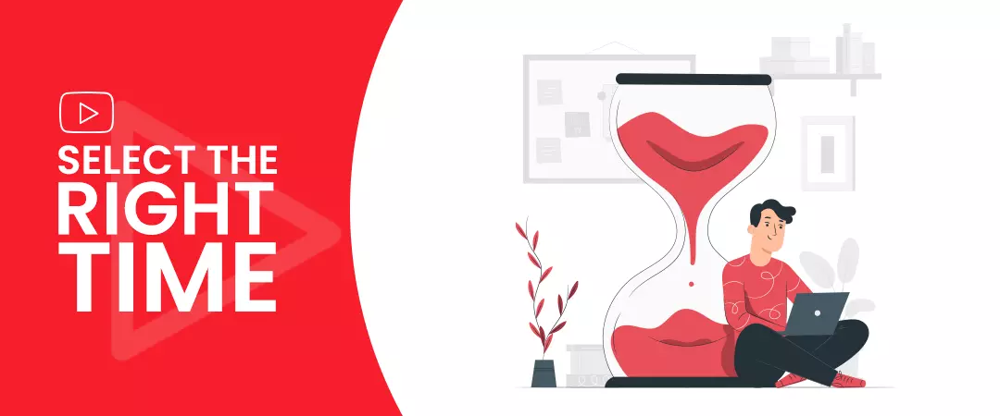
Before you go ahead with your YouTube live streaming:
-
Look at YT Analyticsto know when most of your audience is active on the platform.
-
Look at the geographic locationto know the continent, country, or area of residence of your audience.
-
If you cater to a global audience, select a time that coincides with your top locations or prefer a time that works in several time zones.
-
If you are unaware of the right time for a broadcast, you can create a teaser videoand use the comment section to seek feedback from your viewers.
-
Always be consistent and on schedule, if you plan to do live streams daily or weekly.
Once you find the perfect time for broadcast, schedule your live streams beforehand. Your viewers can set reminders so that they do not miss your streams. The time for which your viewers watch your livestream during or after it has ended is counted towards your channel watch time.
You might be interested in reading: How to increase your watch time on YouTube videos
Create a proper setup.
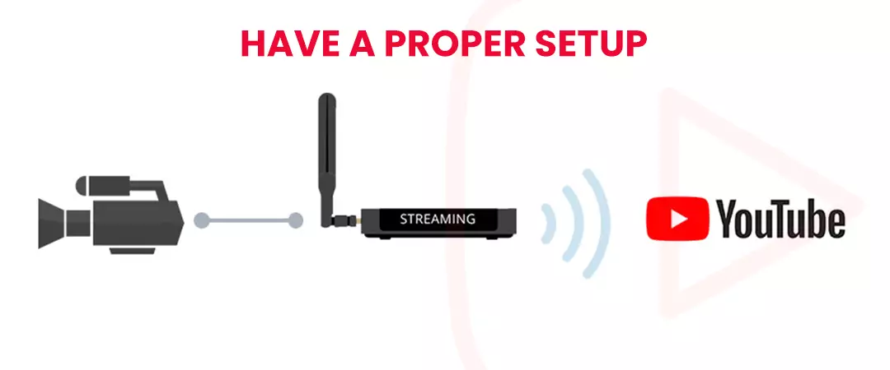
One thing that inherently differentiates a regular video from a YT live is that the former can be edited before upload, whereas this is not the case with the latter. Your audience can see the events unfold right in front of their eyes, so you need to be confident that everything is perfect from the start.
-
Frame your shot so that nothing disrupts your regular stream. Avoid placing anything confidential or personal in the backdrop.
-
Fine-tune lighting to make sure that everything in the frame is well lit, without shadows.
-
Do audio checks, like mic or proper testing, so that you have ideal sound quality. Select a spot that is quiet and far away from noise pollution.
-
Charge batteries and use a power source as a precaution against power outage.
-
Run connection checks to check the network speed; optimum connection maintains 10 MB data per minute.
-
Shut down interruptions, such as pop-ups, sound effects, and notifications.
-
If you are about to talk for a considerable duration of your live stream, keep a glass of water handy to avoid cough and dry throat.
Engage with your audience
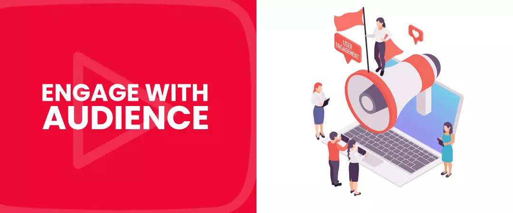
Getting your viewers to your YT live stream is easy; the hard part is keeping your audience engaged throughout the broadcast. We have listed below some engagement booster to keep your viewers hooked.
-
Use the power of recaps. Some of your audience could join your stream partway. Be sure to share quick overviews whenever you notice a jump in total viewers.
-
Build up anticipationso that your viewers are excited throughout the video, keep them guessing about a significant reveal that will make them stay till the end. You can tell your audience not to miss a special announcement at the end or tell them that you will answer a particular question of interest.
-
Make your audience feel special by shouting out their names. Your little appreciation towards your viewers can go a long way.
-
Chat with your viewers in real-time by enabling live chat; ifpossible, use a moderator to interact with the messages, share comments, and delete inappropriate posts.
Promote your YouTube Live stream event
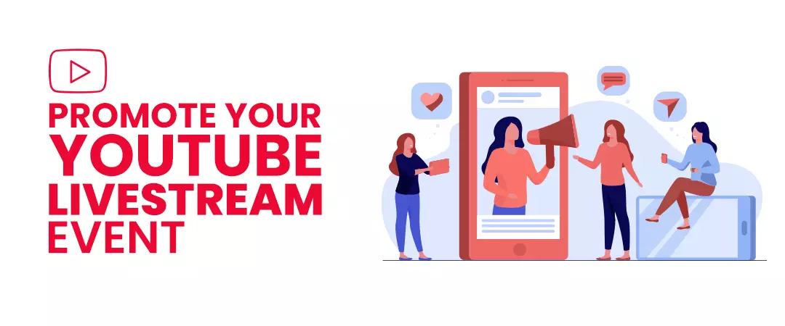
Ask yourself, “Would you even bother to go live if nobody is on the receiving end.” You won’t have an audience to watch your live streams without prior promotional activities.
Your live stream event is like any other event; look that the different ways on and off YT that you can utilize to generate awareness.
We suggest the following measures:
-
Create a banner for your channel promoting the live stream.
-
Produce a trailer to generate excitement, showcase this video as a welcome trailer of your channel.
-
YT sends notifications to your subscribers in the homepage feed or the watch next section whenever you go live. Hence always ask viewers to subscribe to your channel.
-
Ask people to enable notification – notifications will be sent to people when you go live.
-
Schedule your live streams; your viewers will set reminders not to miss the event when you go live.
-
Promote your video by running YT display ads.
-
Use social media to get the audience to your event by sharing a streaming link 48 hours before going live.
-
Send calendar invites via emails since they can be saved and used as reminders.
-
Embed your link in the bio, story, and description. Create an Instagram countdown or Facebook event.
I hope you found this as a relevant guide to YouTube Livestreaming.
Feel free to share!